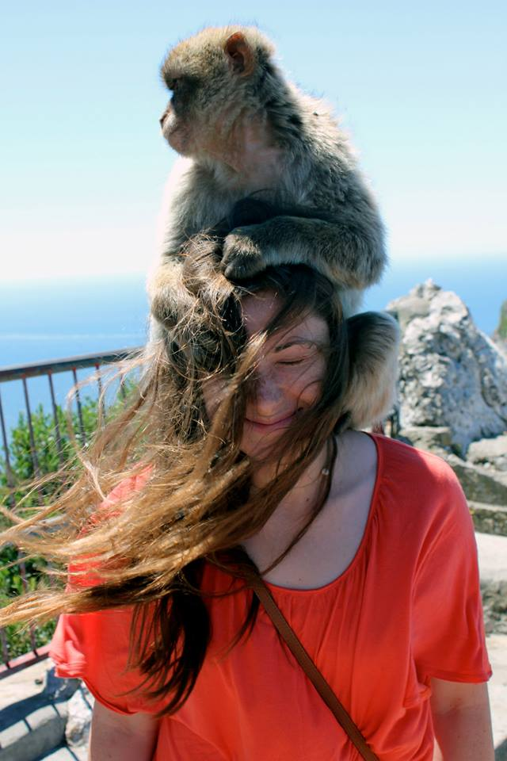

Bio
In February of 2015, I graduated Magna Cum Laude from Middlebury College where I pursued a joint-major in Conservation Biology, which combined Biology and Environmental Studies. Studying science at a liberal arts school was a unique experience that suited both my love of problem-solving methodology and my knack for cross-disciplinary creative thinking. At the end of the day, Middlebury taught me how to learn, think, and adapt: a skillset that I have found valuable in a variety of settings, from the office to the forest.
I am detail-oriented and a natural leader who thrives in fast-paced, high stakes environments where communication and level-headedness are of the essence. My free time is no exception; some of my favorite hobbies include rock and ice climbing, snowboarding, and sailing. A sense of place is very important to me and I take every opportunity to get out and explore the natural landscape around me.
My life has taken me back and forth across the United States. I grew up between Houston, TX and the High Rockies of Colorado before heading north for college in the Green Mountains of Vermont. I now live in Washington, DC and commute to Virginia for work. Currently, I work in visitor services at a National Wildlife Refuge Complex managed by the U.S. Fish and Wildlife Service where I design and coordinate educational programs and aid with the overall functioning of the refuge.